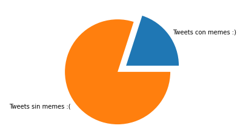
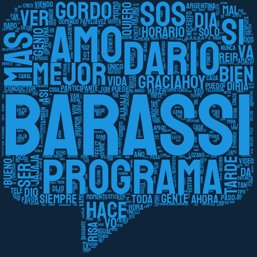

Despúes del análisis de la semana pasada me quedé copado con todo lo que rodea a este programa y su conductor Dario Barassi
Así que para esta semana decidí volver al mismo tema, pero desde un enfoque un poco diferente
Esta vez preferí enfocarme en las imágenes que se comparten del programa, no por nada una de las frases más repetidas por su conductor es "háganlo/a meme"
Entonces me planteé volver a usar Twint para extraer todos los tweets que mencionan a "Barassi" en los últimos dos años, en mi mente pensé que serían menos que los que extraje sobre el programa la semana anterior pero resultó que descargué casi el doble.
La idea en un principio era ver cuantas imágenes se compartían cuando mencionaban tanto a Barassi como al programa. Tal resultó que se comparten más(proporcionalmente) cuando mencionan al conductor, aunque también la muestra era más grande.
Ahí ya me emocioné un poco y se me metió la idea en la cabeza de querer descargar todas esas imágenes. Por lo que me puse manos a la obra y después de varias horas conseguí armar un código que extraía cada tweet con imágenes, luego iteraba por cada una de las urls de esas imágenes para descargarlas y por ultimo les ponía como nombre el id del tweet al que pertenecían(por sí luego quería saber de donde venía esa imagen). Lo que me costó más fue descubrir cómo ponerle el nombre que quería, ya que precisaba aplicar mi función a dos columnas a la vez, pero lo logré. Y claro, la emoción fue tal que dije, bueno voy a descargar todas las imágenes donde se menciona al programa.
De hecho al final de descargar me di cuenta que eran 12,458 imágenes (y eso que no descargué las imágenes de mención a Barassi), una locura, obviamente no iba poder verlas todas y menos analizarlas. La realidad me dió de frente en la cara y me dijo, tenés que acortar. Y así fue, recorté y decidí quedarme con las 100 imágenes con más likes de cada tabla, de esa manera obtendría las imágenes que más le gustó a la gente
Así me puse armar el hilo de esta semana, pero me di cuenta que no era suficiente, algo me estaba faltando, así que volví para generar un análisis de sentimientos, para ver el porcentaje de mensajes positivos y negativos. Por último, ya estando por ahí pensé que era incluso mejor generar una nube de palabras que muestren las palabras más utilizadas para hablar de Barassi y el programa.
Esta vez volvía a subir el código que he realizado, espero poder seguir siendo asi de consecuente con todo esto, más que nada porque